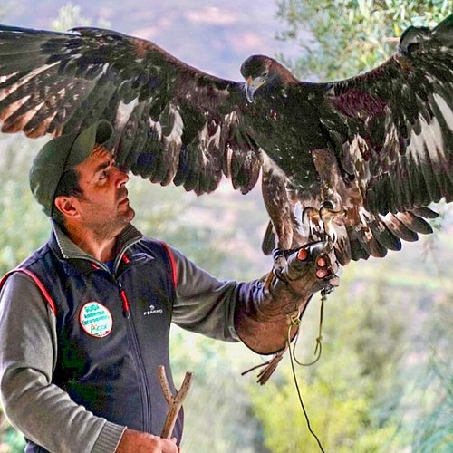

Fra gli insetti deve essere menzionato Buprestis splendens, uno dei coleotteri più rari d'Europa, e Rosalia alpina, un bellissimo e appariscente Coleottero di colore azzurro cenere con macchie nere vellutate, tipico delle estese faggete mature, presenti nel Pollino e nei Monti di Orsomarso, e indice di un basso grado di alterazione degli ambienti forestali. Fra le numerose specie di farfalle, di grande interesse è Melanargia arge, molto localizzata e poco frequente. Tipica delle zone aride del Parco è invece la malmignatta (Latrodectes tredecimguttatus), un ragno rosso e nero dal morso doloroso e tossico, appartenente allo stesso genere della vedova nera americana. Fra i crostacei Chirocephalus ruffoi è un endemismo del Pollino, addirittura individuato solo in alcune pozze d'alta quota, mentre il gambero di fiume (Austropotamobius pallipes) è un indicatore di una elevata qualità delle acque. Gli anfibi del Pollino comprendono diverse specie e sottospecie endemiche italiane, tra cui il tritone crestato italiano (Triturus carnifex), la salamandrina dagli occhiali (Salamandrina terdigitata), l'ululone dal ventre giallo (Bombina variegata pachypus) e la più comune raganella (Hyla intermedia). Tra i rettili, nel Parco vivono due specie minacciate: la testuggine palustre (Emys orbicularis), piccola tartaruga carnivora presente a quote eccezionalmente elevate per questa specie, e la più nota testuggine comune (Testudo hermanni). I serpenti più significativi sono il cervone (Elaphe quatuorlineata) ed il colubro leopardino (Elaphe situla) e la comune e velenosa vipera (Vipera aspis). Varia e non meno rilevante è l'avifauna. La coturnice (Alectoris graeca), specie minacciata che sta giovando, nel territorio del Parco, della cessazione della caccia. Presente è anche il raro picchio nero (Dryocopus martius) e i più comuni picchio verde (Picus viridis) e picchio rosso maggiore (Picoides major). Di grande rilevanza è la coesistenza, nell'ambiente steppico della Petrosa, di tutte e cinque le specie italiane di allodola. Recentemente è stata rilevata la presenza del gracchio corallino (Pyrrhocorax pyrrhocorax). Ben dodici sono le specie di rapaci diurni nidificanti, tra cui l'aquila reale (Aquila chrysaetos), presente con poche coppie nel versante meridionale del Parco, il nibbio reale (Milvus milvus) ed il pellegrino (Falco peregrinus). Il versante orientale del Parco, più arido e ricco di pareti rocciose, offre l'habitat per due specie estremamente minacciante: il lanario (Falco biarmicus feldeggi), falcone localizzato nel mediterraneo, ed il capovaccaio (Neophron percnopterus), piccolo avvoltoio bianco e nero ridotto, in Italia, a pochissime coppie nidificanti. Il grande gufo reale (Bubo bubo) è invece il più raro e spettacolare fra i rapaci notturni. Riguardo ai mammiferi, sono rappresentate tutte le specie più significative dell'Appennino meridionale. Fra i carnivori vive nel Parco una consistente popolazione di lupo (Canis lupus), il gatto selvatico (Felis silvestris), di distribuzione e abbondanza non noti, la martora (Martes martes), la puzzola (Mustela putorius) e, non ultima, la lontra (Lutra lutra), la cui presenza è stata rilevata in diversi corsi d'acqua laddove si conservano abbondanza di prede e buon grado di copertura vegetale delle sponde. Gli ungulati, oltre al comune cinghiale (Sus scrofa), comprendono il capriolo (Capreolus capreolus) presente soprattutto sui Monti di Orsomarso con una piccola popolazione ritenuta una delle poche autoctone d'Italia. Fra i Roditori più significativi, va citato il driomio (Dryomys nitedula), un piccolo gliride presente, in Italia, oltre che sui rilievi montuosi calabresi, solo sulle Alpi orientali. Il driomio, insieme al moscardino, (Muscardinus avellanarius) al ghiro (Myoxus glis) e al quercino (Eliomys quercinus) rappresenta tutte le specie italiane di Gliridi nel Parco. Lo scoiattolo meridionale (Sciurus vulgaris meridionalis) è una sottospecie tipica dell'Appenino centro-meridionale caratterizzata dalla colorazione nera del mantello e dal ventre bianco. L'istrice (Hystrix cristata) è localizzata nel settore meridionale e orientale del Parco, con clima più spiccatamente mediterraneo. Infine, oltre alla lepre europea (Lepus europaeus), frutto di scriteriate immissioni, sopravvivono alcuni nuclei di lepre appenninica (Lepus corsicanus), specie autoctona dell'Italia centro-meridionale. Tra i Pipistrelli, finora poco studiati, vanno segnalati il rinolofo minore (Rhinolophus hipposideros), il vespertilio maggiore (Myotis myotis), il vespertilio di Capaccini (Myotis capaccinii), il pipistrello albolimbato (Pipistrellus kuhli), il miniottero (Miniopterus schreibersi) e il poco frequente molosso del Cestoni (Tadarida teniotis).